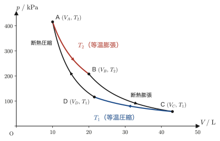
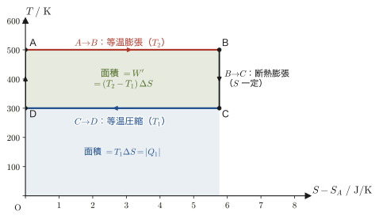

第29章エントロピー — 定義と状態量であることの証明
氷はひとりでに融けて水になるが，水がひとりでに氷に変わって周りを温めることはない．コップに垂らしたインクはひとりでに広がるが，広がったインクがひとりでに1点に集まることはない．栓を抜けば気体は真空へひとりでに広がるが，広がった気体がひとりでに元の隅へ戻ることはない．どの現象でも，エネルギーの総量はどちらの向きでも保存されているのに，実際には一方の向きにしか進まない．高校物理で学んだ熱力学第1法則（エネルギー保存則）だけでは，この「向き」を説明できない．
向きを決める量は，意外にも第28章のカルノー・サイクルの中に隠れていた．吸収した熱 $Q$ を，そのときの温度 $T$ で割った $Q/T$ という組み合わせである．本章ではこれを足し合わせてエントロピー（entropy）という新しい状態量を定義し，それが $Q$ 自身とは違って本当に状態量——経路によらず，始状態と終状態だけで値が決まる量——であることを，一行も飛ばさずに証明する．「氷が融ける向き」や「気体が広がる向き」を，最後には数値で判定できるようになる．
証明の進め方は，カルノー・サイクル1個 → 2個 → $n$ 個 → 任意の閉じた経路，と少しずつ一般化していく形をとる．具体例から出発して段階的に一般化するのは，大学の物理・数学に共通する重要な考え方である．エントロピーが定義できたら，理想気体・ファンデルワールス気体の $S(T,V)$ を書き下し，$S$ が状態量であることを3段階で確定させる．さらに不可逆変化を含めたクラウジウスの不等式 $\dd S\ge \dd'Q/T$ からエントロピー増大の法則を導き，冒頭の「気体の断熱自由膨張はひとりでに起こるか」という問いに答えを出す．
- エントロピーの定義（積分形 $S_B-S_A=\int_A^B\dd'Q_{\text{rev}}/T$ と微分形 $\dd S=\dd'Q_{\text{rev}}/T$）を，カルノー・サイクル1個 → 2個 → $n$ 個 → 任意の閉じた経路，という段階的な一般化から動機づける
- 理想気体のエントロピー $S(T,V)=C_V\ln T+nR\ln V+\alpha_0$ と，ファンデルワールス気体のエントロピー $S(T,V)=C_V\ln T+R\ln(V-b)+\alpha_0$ を，第1法則 $T\dd S=\dd U+p\dd V$ から導く
- 理想気体の等温可逆膨張の $\Delta S=nR\ln(V_2/V_1)$ を，仕事の計算と定義式の両方から求めて一致を確認する
- エントロピーが状態量であることを，(i)理想気体のカルノー・サイクル，(ii)任意の作業物質，(iii)任意のサイクル，という3段階で証明する
- 水の三重点 $T=273.16\ \mathrm{K}$ を基準にした温度の決め方と，クラウジウスの不等式 $\dd S\ge\dd'Q/T$ から導かれる断熱系でのエントロピー増大の法則 $\dd S\ge0$
もとにしたノート：望月泰英『物理学ノート 熱力学』 pp. 45–49．
29.1 エントロピーの定義 — カルノー・サイクルからの動機づけ
まず数字で見てみよう．高温熱源（$400\ \mathrm{K}$）から $800\ \mathrm{J}$ の熱を吸収し，低温熱源（$300\ \mathrm{K}$）へ $600\ \mathrm{J}$ の熱を放出するカルノー・サイクルを考える（差額の $200\ \mathrm{J}$ が仕事になる）．吸収した熱を，それを受け取った熱源の温度で割ると $800/400=2\ \mathrm{J/K}$，放出した熱を同じように割ると $600/300=2\ \mathrm{J/K}$ で，両者はぴたりと等しい．熱そのもの（$800\ \mathrm{J}$ と $600\ \mathrm{J}$）は違うのに，温度で割ると等しくなる——この小さな一致が，本章の出発点である．
第28章では，高温熱源の温度を $T_2$，低温熱源の温度を $T_1$（$T_1\lt T_2$）と書き，理想気体のカルノー・サイクルで，高温熱源から吸収する熱 $Q_2$ と低温熱源へ放出する熱の大きさ $Q_1$ のあいだに $Q_2/T_2=Q_1/T_1$ が成り立つことを見た．本章もこの添字の約束（高温＝2，低温＝1）をそのまま使うが，熱は符号つきで数え直す．高温熱源から吸収する熱を $Q_2\gt0$，低温熱源へ「放出」する熱を $Q_1\lt0$ と書く（本章の $|Q_1|$ が，第28章の $Q_1$ にあたる）．すると第28章の関係は，左辺の和がちょうど $0$ になる形
\begin{equation} \frac{Q_1}{T_1}+\frac{Q_2}{T_2}=0 \label{eq:29-carnot-qt} \end{equation}に書き直せる．上の数値例では $T_2=400\ \mathrm{K}$，$Q_2=800\ \mathrm{J}$，$T_1=300\ \mathrm{K}$，$Q_1=-600\ \mathrm{J}$ で，たしかに $-600/300+800/400=0$ である．
注意：熱の符号の約束と記号 $\dd'Q$
本章（および本書全体）では，系が吸収する熱を正，放出する熱を負とかぞえる．第28章では低温熱源へ放出する熱を大きさ（正の量）$Q_1$ で表したが，本章からは $Q_1$ を符号つき（負）の量に数え直す（本章の $\abs{Q_1}$ が第28章の $Q_1$ にあたる）．したがって，第28章の $W'=Q_2-Q_1$ は，本章の記号では $W'=Q_2+Q_1$ になる．カルノー・サイクルの高温側では熱を吸収するので $Q_2\gt0$，低温側では熱を放出するので $Q_1\lt0$（大きさは $|Q_1|=-Q_1$）である．また，熱の微小量は第23章で導入した記号 $\dd'Q$ で書く．「$'$」は，$\dd'Q$ が「$Q$ の変化量」ではなく，経路によって値が変わる微小な熱量（不完全微分）であることの印である．
式 \eqref{eq:29-carnot-qt} の左辺 $Q_1/T_1+Q_2/T_2$ は，サイクルを1周する量 $\displaystyle\oint\frac{\dd'Q}{T}$ を，高温側の等温過程・低温側の等温過程という2つの区間に分けて計算したものにほかならない（断熱過程では $\dd'Q=0$ なので寄与しない）．そこで，次の問いが自然に生まれる——「1周したとき，$Q/T$ の和がちょうど $0$ になる」という性質は，カルノー・サイクルという特別な例だけの偶然だろうか，それとももっと一般的な，状態量の存在を示す手がかりだろうか．
この問いがなぜ重要かを確認しておこう．圧力 $p$，体積 $V$，温度 $T$ は，どれも「気体が今どんな状態にあるか」だけで決まる状態量（state quantity）である．気体を1サイクルさせて元の状態に戻せば，
$$ \Delta p=p_1-p_1=0,\qquad \Delta V=V_1-V_1=0,\qquad \Delta T=T_1-T_1=0 $$となって，変化はきれいに $0$ になる．ところが，気体が吸収・放出した熱の合計 $\Delta Q=Q_1+Q_2$（符号込みの和）は，一般に $0$ にはならない——カルノー・サイクルでは正味で $Q_1+Q_2=W'\gt0$（気体が外部にした正味の仕事）だけ熱が仕事に変わっているので，$\Delta Q\ne0$ である．つまり，熱 $Q$ そのものは状態量ではない（$Q$ の値は経路に依存する．これは第26章で見た「熱と仕事は状態量ではなく，経路によって値が変わる」という事実の具体例である）．
ところが式 \eqref{eq:29-carnot-qt} は，同じ熱 $Q$ を温度 $T$ で割った $Q/T$ を1サイクルにわたって足し合わせると $0$ になることを示している．これは，$Q/T$ を寄せ集めて作った新しい量 $S$ が，$p,V,T$ と同じく「今の状態だけで決まる量」になっているかもしれない，ということを強く示唆している．
イメージ：エントロピーは分子運動の乱れの度合い
これから見るように，エントロピー $S$ は「気体が受け取った熱 $\dd'Q$ を，そのときの温度 $T$ で割って足し集めたもの」として定義される，れっきとした物理量（単位 $\mathrm{J/K}$）である．同時にエントロピーは，「系の分子運動の乱れの度合い」を表す量だともよく説明される．たとえば，整然と並んだ結晶（氷）が融けて水になり，水分子が自由に動き回れるようになると，分子配置の乱雑さが増え，実際にエントロピーも増える．$0\ ^{\circ}\mathrm{C}$（$273.15\ \mathrm{K}$）の氷 $1\ \mathrm{kg}$ が融けるとき，融解熱 $3.34\times10^5\ \mathrm{J}$ を吸収するので，
$$ \Delta S=\frac{Q}{T}=\frac{3.34\times10^5\ \mathrm{J}}{273.15\ \mathrm{K}}\approx1.22\times10^3\ \mathrm{J/K}\ \gt\ 0 $$となる（例題29.2）．「乱れが増えると $\Delta S\gt0$」という対応が，数字で確かめられた．本章ではまず定量的な定義（$\dd S=\dd'Q_{\text{rev}}/T$）を主軸にすえ，それが本当に状態量になることを証明する．「乱れの度合い」という描像は，29.8節の自由膨張で計算結果と結びつける．
29.1.1 2つのサイクルの場合
式 \eqref{eq:29-carnot-qt} を，隣り合う2つのカルノー・サイクルへ拡張してみよう．縦軸を圧力 $p$，横軸を体積 $V$ にとった $p$-$V$ 図（図29.1）で，2つのカルノー・サイクルが1本の断熱線を共有して並んでいるとする．どちらのサイクルも時計回りにたどる．左のサイクルは高温熱源 $T_2$ から $Q_2\ (\gt0)$ を吸収し，低温熱源 $T_1$ へ $Q_1\ (\lt0)$ を放出する．右のサイクルは，別の（一般には温度の違う）高温熱源 $T_4$ から $Q_4\ (\gt0)$ を吸収し，別の低温熱源 $T_3$ へ $Q_3\ (\lt0)$ を放出する．それぞれのサイクルに式 \eqref{eq:29-carnot-qt} を適用すると，
$$ \frac{Q_1}{T_1}+\frac{Q_2}{T_2}=0,\qquad \frac{Q_3}{T_3}+\frac{Q_4}{T_4}=0 $$であり，この2つの式を辺々足し合わせれば，
\begin{equation} \frac{Q_1}{T_1}+\frac{Q_2}{T_2}+\frac{Q_3}{T_3}+\frac{Q_4}{T_4}=0 \label{eq:29-two-cycles} \end{equation}が得られる．式の上では単に2つの式を足しただけだが，図のうえでは意味がある．共有する断熱線は，左のサイクルでは下向きに，右のサイクルでは上向きにたどられるので，2つのサイクルを合わせた閉じた経路を考えると，この共有部分は互いに打ち消し合って経路から消え，外周だけが残る．しかも断熱線では $\dd'Q=0$ なので，共有部分は式 \eqref{eq:29-two-cycles} の左辺にもはじめから寄与しない．つまり式 \eqref{eq:29-two-cycles} は，4つの温度 $T_1,T_2,T_3,T_4$ の熱源とやり取りする，もはやカルノー・サイクルではない閉じた経路について，$Q/T$ の和が $0$ になることを示している．
29.1.2 複数（$n$ 個）のサイクルの場合
同じ考え方を，$n$ 個のサイクルが次々に断熱線を共有して並ぶ場合へ拡張する．任意の可逆な閉じた経路 $C$（$p$-$V$ 図の閉曲線，図29.2の緑の破線）が与えられたとして，次の手順で近似する．
- 閉曲線 $C$ の内部を，$n+1$ 本の断熱線で $n$ 本の縦の帯に区切る．
- 各帯で，$C$ の上側の弧を等温線の短い線分1本で，下側の弧も等温線の線分1本で置き換える．すると各帯は，2本の等温線と2本の断熱線で囲まれた小さなカルノー・サイクルになる．全体の外周は，等温片と断熱片をつないだ階段状の折れ線である．
- $k$ 番目の等温片（温度 $T_k$）でやり取りする熱を $Q_k$ とする．各帯は上の等温片と下の等温片の2つをもつので，等温片は全部で $n\times2=2n$ 個ある．
各帯のカルノー・サイクルに式 \eqref{eq:29-carnot-qt} を適用し，$n$ 個の式をすべて足し合わせると，
\begin{equation} \sum_{k=1}^{2n}\frac{Q_k}{T_k}=0 \label{eq:29-n-cycles} \end{equation}が得られる．隣り合う帯が共有する断熱線は，一方の帯では下向き，他方の帯では上向きにたどられるので，合わせた経路からは消え，外周の階段だけが残る．断熱線は $\dd'Q=0$ なので式 \eqref{eq:29-n-cycles} にも寄与せず，左辺は階段状の折れ線を1周したときの $\oint\dd'Q/T$ に等しい．
29.1.3 一般化 — 任意の周回経路
ここで，階段状の折れ線ともとの曲線 $C$ の違いを考える．$C$ の小さな一片と，それを置き換えた等温片・断熱片の階段が，同じ2点を結んでいるとする．どちらの経路でも内部エネルギーの変化 $\Delta U$ は同じ（$U$ は状態量）なので，第1法則 $\Delta U=Q-W'$ から，吸収する熱の差は外部にする仕事の差に等しい：$Q_C-Q_{\text{階段}}=W'_C-W'_{\text{階段}}$．$p$-$V$ 図で，仕事は曲線の下の面積なので，この差は $C$ の一片と階段のあいだにはさまれた細い領域の面積である．帯を細くして $n$ を増やすと，このはさまれた領域の総面積は $0$ に近づくので，熱の差も $0$ に近づく．また，各片で温度が少し変わる影響も，片が小さくなるほど小さくなる．したがって $n\to\infty$ の極限で，式 \eqref{eq:29-n-cycles} の左辺の和は，$C$ に沿った積分（区分求積法．大学数学 第5章 5.1節）に置き換わる：
\begin{equation} \lim_{n\to\infty}\sum_{k=1}^{2n}\frac{Q_k}{T_k}=\oint_C\frac{\dd'Q}{T} \label{eq:29-limit-integral} \end{equation}ここで $\displaystyle\oint_C$ は，経路 $C$ に沿って1周する積分（始点と終点が一致する閉じた経路をまわる線積分）である．式 \eqref{eq:29-n-cycles} は任意の $n$ で成り立っていたので，その極限の右辺もやはり $0$ でなければならない．したがって，
\begin{equation} \oint_C\frac{\dd'Q}{T}=0 \label{eq:29-clausius-cycle} \end{equation}が，任意の可逆な閉じた経路 $C$ について成り立つ．これをクラウジウスの等式と呼ぶ（不可逆な変化を含めると $=$ が $\le$ に変わる．29.7節）．
式 \eqref{eq:29-clausius-cycle} は，$Q/T$ が状態量になりうることを示す核心である．次の導出で，この式から「積分が経路によらない」ことを実際に示す．
導出：$\oint\dd'Q/T=0$ から，$\int_A^B\dd'Q/T$ が経路によらないこと
状態 $A$ から状態 $B$ まで，可逆な2つの経路 I，II があるとする．I で $A\to B$ に進み，II を逆向きにたどって $B\to A$ に戻る閉じた経路を考える．可逆変化は逆向きにたどることができ，逆にたどると各段階の $\dd'Q$ の符号が反転するので，II を逆にたどる積分は $\int_{B\,(\mathrm{II})}^{A}=-\int_{A\,(\mathrm{II})}^{B}$ である．この閉じた経路は可逆なので，式 \eqref{eq:29-clausius-cycle} より
$$ 0=\oint\frac{\dd'Q}{T}=\int_{A\ (\mathrm{I})}^{B}\frac{\dd'Q}{T}+\int_{B\ (\mathrm{II}\text{ の逆向き})}^{A}\frac{\dd'Q}{T} =\int_{A\ (\mathrm{I})}^{B}\frac{\dd'Q}{T}-\int_{A\ (\mathrm{II})}^{B}\frac{\dd'Q}{T} $$となる．よって
$$ \int_{A\ (\mathrm{I})}^{B}\frac{\dd'Q}{T}=\int_{A\ (\mathrm{II})}^{B}\frac{\dd'Q}{T} $$すなわち，$A$ から $B$ への可逆な経路によらず，積分の値は $A$ と $B$ だけで決まる．そこで基準の状態 $O$ をひとつ決めておき，状態 $A$ のエントロピーを $S(A)=\int_O^A\dd'Q_{\text{rev}}/T$ と定義すれば，$S(A)$ は $A$ だけで決まる．基準 $O$ の選び方を変えると $S$ は状態によらない定数だけずれるが，差 $S_B-S_A$ は変わらない（この定数が29.2節の積分定数 $\alpha_0$ に対応する）．
（導出終わり）
そこで，この積分 $\dd'Q/T$ を新しい状態量の微小変化として定義する．
定義29.1 エントロピー
系が可逆変化（準静的で，摩擦などの散逸がない変化）によって微小な熱 $\dd'Q_{\text{rev}}$ を受け取るとき，そのときの系の絶対温度を $T$ として，
\begin{equation} \dd S\equiv\frac{\dd'Q_{\text{rev}}}{T} \label{eq:29-entropy-diff} \end{equation}で定義される状態量 $S\ [\mathrm{J/K}]$ をエントロピー（entropy）と呼ぶ（微分形の定義．$\dd'Q_{\text{rev}}$ は系が可逆変化で受け取った熱である．不可逆変化の場合の扱いは29.7節で述べる）．状態 $A$ から状態 $B$ まで，可逆な経路に沿って積分すれば，2つの状態のあいだのエントロピー差
\begin{equation} S_B-S_A=\int_A^B\frac{\dd'Q_{\text{rev}}}{T} \label{eq:29-entropy-int} \end{equation}が定まる（積分形の定義）．上の導出により，この積分の値は $A$ から $B$ までの可逆な経路の選び方によらないので，$S$ は状態量として定義できる．
例題29.1 $Q$ は状態量でないが $Q/T$ の和は $0$ になることの数値確認
高温熱源 $T_2=500\ \mathrm{K}$，低温熱源 $T_1=300\ \mathrm{K}$ のあいだで動く理想気体のカルノー・サイクルで，1サイクルに高温熱源から $Q_2=1000\ \mathrm{J}$ を吸収した．(1) 低温熱源へ放出する熱 $Q_1$（符号込み）を求めよ．(2) 1サイクルで気体が外部にした正味の仕事 $W'$ と熱効率 $\eta$ を求めよ．(3) $Q_1+Q_2$ と $Q_1/T_1+Q_2/T_2$ を比べ，前者は $0$ でないのに後者は $0$ になることを確かめよ．
解答 (1) 式 \eqref{eq:29-carnot-qt} $Q_1/T_1+Q_2/T_2=0$ より，
$$ Q_1=-\frac{T_1}{T_2}Q_2=-\frac{300}{500}\times1000\ \mathrm{J}=-600\ \mathrm{J} $$（放出なので符号は負．大きさは $600\ \mathrm{J}$）．(2) 1サイクルで元の状態に戻るので $\Delta U=0$．第1法則 $\Delta U=Q-W'$ で $Q=Q_1+Q_2$ とおくと $0=Q_1+Q_2-W'$ より $W'=Q_1+Q_2=(-600+1000)\ \mathrm{J}=400\ \mathrm{J}$．熱効率は $\eta=W'/Q_2=400/1000=0.40$ で，これは $1-T_1/T_2=1-300/500=0.40$ という第28章の結果と一致する．(3)
$$ Q_1+Q_2=-600+1000=400\ \mathrm{J}\ (\ne0),\qquad \frac{Q_1}{T_1}+\frac{Q_2}{T_2}=\frac{-600}{300}+\frac{1000}{500}=-2+2=0 $$熱の合計 $400\ \mathrm{J}$（これがちょうど正味の仕事 $W'$）は $0$ にならず，$Q$ が状態量でないことを示す．一方，$Q/T$ の和はちょうど $0$ になり，式 \eqref{eq:29-carnot-qt} の主張と一致する．
例題29.2 氷の融解のエントロピー変化
$0\ ^{\circ}\mathrm{C}$（$273.15\ \mathrm{K}$）の氷 $1.00\ \mathrm{kg}$ を，同じ温度のまま可逆的に融かして水にした．融解熱を $3.34\times10^5\ \mathrm{J/kg}$ として，(1) 氷が吸収した熱 $Q$ と (2) エントロピー変化 $\Delta S$ を求めよ．(3) 逆に，$0\ ^{\circ}\mathrm{C}$ の水 $1.00\ \mathrm{kg}$ が同じ温度で可逆的に凍るときの $\Delta S$ の符号を答えよ．
解答 (1) $Q=1.00\ \mathrm{kg}\times3.34\times10^5\ \mathrm{J/kg}=3.34\times10^5\ \mathrm{J}$．(2) 融解は温度 $T=273.15\ \mathrm{K}$ 一定のまま起こるので，式 \eqref{eq:29-entropy-int} で $T$ を積分の外に出せて，
$$ \Delta S=\int\frac{\dd'Q_{\text{rev}}}{T}=\frac{Q}{T}=\frac{3.34\times10^5\ \mathrm{J}}{273.15\ \mathrm{K}}\approx1.22\times10^3\ \mathrm{J/K} $$(3) 凍るときは熱 $Q=-3.34\times10^5\ \mathrm{J}$（放出）なので $\Delta S=-1.22\times10^3\ \mathrm{J/K}\lt0$．固体から液体へ（分子が動き回れるようになる向き）はエントロピーが増え，液体から固体へはエントロピーが減る．
29.2 理想気体のエントロピー
定義29.1が使えるようになったので，理想気体 $n\ \mathrm{mol}$ のエントロピー $S$ を，状態を指定する変数として温度 $T$ と体積 $V$ を選び，関数 $S(T,V)$ の形で具体的に求めてみよう．ここでは定積熱容量 $C_V$ は温度によらない定数とする（単原子分子の理想気体なら $C_V=\frac32nR$）．
導出：理想気体のエントロピー $S(T,V)$
定義29.1の微分形 $\dd S=\dd'Q/T$（可逆変化）から出発する．熱力学第1法則（第23章）$\dd U=\dd'Q-\dd'W'$ と，仕事 $\dd'W'=p_{\mathrm{ex}}\,\dd V$（気体が外部にする仕事．第26章）を使う．可逆変化は準静的なので外圧は気体自身の圧力に等しく，$p_{\mathrm{ex}}=p$ としてよい．したがって，
$$ \dd'Q=\dd U+p\,\dd V $$である．理想気体の内部エネルギーは温度だけで決まる（第27章で見たとおり，$(\partial U/\partial V)_T=0$）ので，$\dd U=C_V\,\dd T$ である．したがって，
$$ \dd'Q=C_V\,\dd T+p\,\dd V $$となり，両辺を $T$ で割ると，
\begin{equation} \dd S=\frac{\dd'Q}{T}=\frac{C_V}{T}\dd T+\frac{p}{T}\dd V \label{eq:29-ds-general-ideal} \end{equation}が得られる．ここに理想気体の状態方程式 $pV=nRT$（第23章）から $p=nRT/V$ を代入すると，$p/T=nR/V$ となるので，
\begin{equation} \dd S=C_V\frac{\dd T}{T}+nR\frac{\dd V}{V} \label{eq:29-ds-ideal} \end{equation}が得られる．式 \eqref{eq:29-ds-ideal} は，右辺が $T$ だけの関数に $\dd T$ を掛けた項と，$V$ だけの関数に $\dd V$ を掛けた項の和になっているので，各項をそれぞれ単独で積分できる（大学数学 第5章 5.1節の積分公式 $\int\dd x/x=\ln|x|+\text{const.}$ を，$T\gt0$，$V\gt0$ なので絶対値記号なしで使う）：
$$ S=\int C_V\frac{\dd T}{T}+\int nR\frac{\dd V}{V}=C_V\ln T+nR\ln V+\alpha_0 $$$\alpha_0$ は積分定数で，基準状態の選び方によって決まる（29.1.3節で見たとおり，$S$ は基準の選び方による定数の違いを除いて決まる）．
（導出終わり）
公式29.1 理想気体のエントロピー
$n\ \mathrm{mol}$ の理想気体（定積熱容量 $C_V$ が一定とみなせる範囲）のエントロピーは，温度 $T$ と体積 $V$ の関数として，
\begin{equation} S(T,V)=C_V\ln T+nR\ln V+\alpha_0 \label{eq:29-ideal-gas-entropy} \end{equation}と表される（$\alpha_0$ は積分定数）．対数の中身 $T,V$ はそれぞれ単位付きの量ではなく，基準値（たとえば $1\ \mathrm{K}$，$1\ \mathrm{m^3}$）で割った無次元の数値として扱う——そうしないと $\ln T$ の中身が単位を持ってしまい，対数の引数として意味をなさない（基準値の対数分は $\alpha_0$ の中にまとめてあると考えてもよい）．
注意：$\alpha_0$ の意味と $S$ の絶対値
実際に意味をもつのは $S$ の値そのものではなく，2つの状態の差 $\Delta S$ である（差をとると $\alpha_0$ は消える）．$S$ の絶対的な値が決まるのは，絶対零度でのエントロピーを与える熱力学第3法則（第32章）を使うときである．
イメージ：なぜ対数（$\ln$）の形になるのか
式 \eqref{eq:29-ds-ideal} の右辺は $\dd T/T$ と $\dd V/V$ という「変化量を，そのときの値そのもので割ったもの」の和になっている．たとえば $\dd V/V$ は，体積が今の値の何倍になったかという相対的な変化率を表す量である．このような「相対変化率の蓄積」を足し合わせていくと対数関数が現れる，というのは高校数学 第6章で学んだ対数の性質そのものであり，$\int\dd x/x=\ln x+\text{const.}$ という積分公式に対応している．体積を2倍にしても3倍にしても，エントロピーの増加分 $nR\ln2$，$nR\ln3$ は体積の絶対的な大きさによらず「体積比」だけで決まる——これが対数の形になる物理的な理由である．
なぜ？：$\dd'Q$ は全微分でないのに，$\dd'Q/T$ は全微分になる（積分因子）
式 \eqref{eq:29-ds-ideal} の導出の途中で，熱の微小量は $\dd'Q=C_V\,\dd T+\dfrac{nRT}{V}\,\dd V$ だった．$\dd T$ の係数を $M=C_V$，$\dd V$ の係数を $N=nRT/V$ とおくと，ある関数 $f(T,V)$ の全微分 $\dd f=(\partial f/\partial T)\dd T+(\partial f/\partial V)\dd V$ になっているためには，2階の偏微分が順序によらないこと（シュワルツの定理．大学数学 第6章 6.3節）から $\partial M/\partial V=\partial N/\partial T$ でなければならない．ところが，
$$ \frac{\partial M}{\partial V}=\frac{\partial C_V}{\partial V}=0,\qquad \frac{\partial N}{\partial T}=\frac{\partial}{\partial T}\!\left(\frac{nRT}{V}\right)=\frac{nR}{V}\ne0 $$なので，$\dd'Q$ は全微分ではない（これが「$Q$ は状態量でなく，経路によって値が変わる」ことの数学的な中身であり，$\dd$ でなく $\dd'$ と書く理由である）．一方，$T$ で割った $\dd S=\dfrac{C_V}{T}\dd T+\dfrac{nR}{V}\dd V$ では，
$$ \frac{\partial}{\partial V}\!\left(\frac{C_V}{T}\right)=0=\frac{\partial}{\partial T}\!\left(\frac{nR}{V}\right) $$となって全微分の条件が成り立つ．つまり，全微分でない $\dd'Q$ に $1/T$ を掛けると全微分になる．このように，掛けると全微分に変わる因子を積分因子（integrating factor）といい，$1/T$ は $\dd'Q$ の積分因子である（大学数学 第34章 34.4節）．エントロピーが状態量であるという主張の数学的な本質は，「$1/T$ が $\dd'Q$ の積分因子である」ことにほかならない．
例題29.3 理想気体のエントロピーの数値計算
単原子理想気体 $n=1\ \mathrm{mol}$（$C_V=\frac32nR$）について，状態1（$T_1=300\ \mathrm{K},V_1=0.0224\ \mathrm{m^3}$）から状態2（$T_2=600\ \mathrm{K},V_2=0.0448\ \mathrm{m^3}$）へ変化したときのエントロピー変化 $\Delta S=S(T_2,V_2)-S(T_1,V_1)$ を求めよ．
解答 式 \eqref{eq:29-ideal-gas-entropy} で積分定数 $\alpha_0$ は状態1・状態2の両方で共通なので，差をとると消える：
$$ \Delta S=C_V\ln\frac{T_2}{T_1}+nR\ln\frac{V_2}{V_1} $$$T_2/T_1=600/300=2$，$V_2/V_1=0.0448/0.0224=2$ なので，
$$ \Delta S=\frac32nR\ln2+nR\ln2=\frac52nR\ln2 $$数値を代入すると（$R=8.314\ \mathrm{J/(mol\,K)}$，$\ln2\approx0.6931$），
$$ \Delta S=\frac52\times1\times8.314\times0.6931\ \mathrm{J/K}\approx14.4\ \mathrm{J/K} $$温度・体積がともに2倍になったことで，エントロピーが増加している（$T,V$ がともに増えると対数の中身が大きくなり，エントロピーは増える）．
例題29.4 2つの経路で $\int\dd'Q/T$ を計算して，$S$ が状態量であることを確かめる
例題29.3と同じ単原子理想気体 $1\ \mathrm{mol}$ を，状態1（$300\ \mathrm{K}$，$0.0224\ \mathrm{m^3}$）から状態2（$600\ \mathrm{K}$，$0.0448\ \mathrm{m^3}$）へ，次の2つの可逆な経路で変化させる．経路I：$300\ \mathrm{K}$ の等温膨張で体積を $V_2$ にしてから，体積 $V_2$ 一定のまま $600\ \mathrm{K}$ まで加熱する．経路II：先に体積 $V_1$ 一定のまま $600\ \mathrm{K}$ まで加熱してから，$600\ \mathrm{K}$ の等温膨張で体積を $V_2$ にする．それぞれの経路で吸収する熱 $Q$ と $\int\dd'Q/T$ を求め，比べよ．
解答 定積の加熱で吸収する熱は $C_V\Delta T$，$\int\dd'Q/T=C_V\ln(T_{\text{後}}/T_{\text{前}})$．等温膨張では $Q=nRT\ln(V_2/V_1)$，$\int\dd'Q/T=Q/T=nR\ln(V_2/V_1)$（29.4節）．ここで $C_V=\frac32R=12.471\ \mathrm{J/K}$，$nR\ln2=5.763\ \mathrm{J/K}$，$C_V\ln2=8.644\ \mathrm{J/K}$，$C_V(600-300)\ \mathrm{K}=3741\ \mathrm{J}$ である．
経路I：$Q_{\mathrm{I}}=(8.314\times300\times0.6931+3741)\ \mathrm{J}=(1729+3741)\ \mathrm{J}\approx5470\ \mathrm{J}$，$\displaystyle\int\frac{\dd'Q}{T}=5.763+8.644\approx14.41\ \mathrm{J/K}$．
経路II：$Q_{\mathrm{II}}=(3741+8.314\times600\times0.6931)\ \mathrm{J}=(3741+3458)\ \mathrm{J}\approx7199\ \mathrm{J}$，$\displaystyle\int\frac{\dd'Q}{T}=8.644+5.763\approx14.41\ \mathrm{J/K}$．
吸収する熱は $5470\ \mathrm{J}$ と $7199\ \mathrm{J}$ で経路によって違う（$Q$ は状態量でない）のに，$\int\dd'Q/T$ は同じ $14.41\ \mathrm{J/K}$ で，例題29.3の $\Delta S$ とも一致する（$S$ は状態量である）．
29.3 ファンデルワールス気体のエントロピー
理想気体では分子どうしの相互作用や分子自身の大きさを無視したが，実在気体によりよく合うファンデルワールスの状態方程式（第24章）
$$ \left(p+\frac{a}{V^2}\right)(V-b)=RT $$（$a$：分子間の引力の強さを表す定数，$b$：分子どうしが近づけない体積（排除体積．分子自身の体積のおよそ4倍にあたる）を表す定数．ここでは $n=1\ \mathrm{mol}$ として考える）にしたがう気体について，同じ手順でエントロピーを求めてみよう．理想気体との大きな違いは，分子間に引力がはたらくために内部エネルギーが体積に依存する点である．
導出：ファンデルワールス気体のエントロピー
29.2節と同じく，$\dd S=\dd'Q/T$ と $\dd'Q=\dd U+p\,\dd V$ から，
$$ T\,\dd S=\dd U+p\,\dd V $$とする．ファンデルワールス気体では，内部エネルギー $U$ は温度 $T$ と体積 $V$ の2変数の関数なので，理想気体と違って体積の変化による項が残り，
$$ \dd U=C_V\,\dd T+\left(\frac{\partial U}{\partial V}\right)_T\dd V $$である．内圧 $(\partial U/\partial V)_T$ は，分子間の引力に逆らって体積を増やすときに必要なエネルギーを表し，ファンデルワールス気体では $a/V^2$ になる（第27章 27.4節で内圧の意味を調べ，第31章31.6節（例題31.10）で熱力学の一般式から導く．$U=C_VT-a/V+\text{const.}$ に対応する）．これを代入すると，
$$ T\,\dd S=C_V\,\dd T+\left(\frac{a}{V^2}+p\right)\dd V $$となる．ファンデルワールスの状態方程式を変形すると $p+\dfrac{a}{V^2}=\dfrac{RT}{V-b}$ なので（$p=\dfrac{RT}{V-b}-\dfrac{a}{V^2}$ と同じ），
$$ T\,\dd S=C_V\,\dd T+\frac{RT}{V-b}\dd V $$両辺を $T$ で割って，
\begin{equation} \dd S=\frac{C_V}{T}\dd T+\frac{R}{V-b}\dd V \label{eq:29-vdw-ds} \end{equation}が得られる．これが全微分になっていることを，シュワルツの定理（大学数学 第6章 6.3節）で確かめる．$\dd T$ の係数を $M=C_V/T$，$\dd V$ の係数を $N=R/(V-b)$ とおくと，
$$ \frac{\partial M}{\partial V}=\frac{\partial}{\partial V}\!\left(\frac{C_V}{T}\right)=0,\qquad \frac{\partial N}{\partial T}=\frac{\partial}{\partial T}\!\left(\frac{R}{V-b}\right)=0 $$で，$\partial M/\partial V=\partial N/\partial T$ が成り立つ．したがって式 \eqref{eq:29-vdw-ds} は $S(T,V)$ の全微分であり，$T$ の項と $V$ の項を別々に積分して足し合わせてよい（$C_V$ は定数とする）：
$$ S=\int C_V\frac{\dd T}{T}+\int\frac{R\,\dd V}{V-b} $$右の積分は $V-b$ を新しい変数とみれば $\int\dd x/x$ の形なので，
\begin{equation} S(T,V)=C_V\ln T+R\ln(V-b)+\alpha_0 \label{eq:29-vdw-entropy} \end{equation}を得る．とくに温度一定（$\dd T=0$）の変化では，第1項は差をとると消えて，
\begin{equation} \Delta S=R\ln\frac{V_2-b}{V_1-b}\qquad(\text{等温変化}) \label{eq:29-vdw-isothermal} \end{equation}（導出終わり）
公式29.2 ファンデルワールス気体のエントロピー
ファンデルワールス気体 $1\ \mathrm{mol}$（定積モル熱容量 $C_V$ が一定とみなせる範囲）のエントロピーは
$$ S(T,V)=C_V\ln T+R\ln(V-b)+\alpha_0 $$である（式 \eqref{eq:29-vdw-entropy}）．理想気体の式 \eqref{eq:29-ideal-gas-entropy}（$n=1$）で $V$ を $V-b$ に置き換えた形で，分子どうしが近づけない体積 $b$ の分だけ，気体が動き回れる体積が減ったことを表している．引力の定数 $a$ は $S$ に現れない．
イメージ：$a$ が $S$ に現れないのはなぜか
$T\,\dd S=\dd U+p\,\dd V$ の右辺で，引力は2か所に効く．第1に，体積を増やすと引力に逆らってエネルギーを与えねばならず，$\dd U$ に $+\dfrac{a}{V^2}\dd V$ が加わる．第2に，引力のために気体の圧力が理想気体の値より $a/V^2$ だけ低くなり，$p\,\dd V$（気体が外部にする仕事）が $-\dfrac{a}{V^2}\dd V$ だけ減る．この2つがちょうど打ち消し合うので，$T\,\dd S$ には $a$ が残らない．引力を「気体の内側の相互作用」とみなすと，熱として出入りするのは外から見える分だけだ，ということでもある．
注意：内部エネルギーの体積依存を落としてはいけない
理想気体と同じ気分で $\dd U=C_V\,\dd T$ とおいて，$T\,\dd S=C_V\,\dd T+p\,\dd V$ に $p=RT/(V-b)-a/V^2$ を代入すると，
$$ \dd S=\frac{C_V}{T}\dd T+\left(\frac{R}{V-b}-\frac{a}{V^2T}\right)\dd V $$となり，$a/(V^2T)$ という余分な項が現れる．ところがこの式では，$M=C_V/T$，$N=R/(V-b)-a/(V^2T)$ として $\partial M/\partial V=0$，$\partial N/\partial T=a/(V^2T^2)$ が一致しない．つまりこの式は，どんな関数 $S(T,V)$ の全微分にもなっておらず，$S$ が状態量であるという定理29.2に反する．エントロピーが状態量であるためには，内部エネルギーの体積依存（引力の効果）を正しく取り入れなければならない．
例題29.5 ファンデルワールス気体のエントロピー：極限と数値
(1) 式 \eqref{eq:29-vdw-entropy} で $b\to0$ とすると，理想気体のエントロピー \eqref{eq:29-ideal-gas-entropy}（$n=1$）に一致することを確かめよ．また $a\to0$ だけの極限ではどうなるか．(2) 二酸化炭素（表24.1の値 $a=0.364\ \mathrm{Pa\,m^6/mol^2}$，$b=4.27\times10^{-5}\ \mathrm{m^3/mol}$）$1\ \mathrm{mol}$ を $300\ \mathrm{K}$ で $1.0\ \mathrm{L}$ から $2.0\ \mathrm{L}$ へ可逆に等温膨張させたときの $\Delta S$ を求め，理想気体の値 $R\ln2$ と比べよ．また，吸収する熱 $Q$ と内部エネルギーの増加 $\Delta U$，気体がする仕事 $W'$ を求めよ．
解答 (1) $b\to0$ で $\ln(V-b)\to\ln V$ なので $S\to C_V\ln T+R\ln V+\alpha_0$ となり，$n=1$ の理想気体の式 \eqref{eq:29-ideal-gas-entropy} に一致する．$a$ は $S$ の式にもともと現れないので，$a\to0$ だけの極限をとっても式は変わらず $C_V\ln T+R\ln(V-b)+\alpha_0$ のままである．分子自身の大きさ（$b$）だけが，理想気体からのずれとして $S$ に残る．
(2) 式 \eqref{eq:29-vdw-isothermal} より，
$$ \Delta S=R\ln\frac{V_2-b}{V_1-b}=8.314\times\ln\frac{2.0\times10^{-3}-4.27\times10^{-5}}{1.0\times10^{-3}-4.27\times10^{-5}}\ \mathrm{J/K}=8.314\times\ln2.0446\ \mathrm{J/K}\approx5.95\ \mathrm{J/K} $$理想気体の $R\ln2=5.76\ \mathrm{J/K}$ より約 $3\,\%$ 大きい（$b$ の分だけ動ける体積が減り，体積比が $2$ から $2.04$ に大きくなったため）．吸収する熱は $Q=T\Delta S=300\times5.946\ \mathrm{J}\approx1.78\times10^3\ \mathrm{J}$．内部エネルギーの増加は $\Delta U=\displaystyle\int_{V_1}^{V_2}\frac{a}{V^2}\dd V=a\left(\frac1{V_1}-\frac1{V_2}\right)=0.364\times(1000-500)\ \mathrm{J}=182\ \mathrm{J}$．第1法則より，気体がする仕事は $W'=Q-\Delta U\approx(1784-182)\ \mathrm{J}\approx1.60\times10^3\ \mathrm{J}$ である．
29.4 理想気体の等温可逆膨張の $\Delta S$
理想気体を，温度 $T$ を一定に保ったまま，体積 $V_1$ から $V_2$ まで準静的（可逆）に膨張させる場合を考える．この節では，エントロピー変化 $\Delta S$ を2通りの方法——(a) 仕事を計算してから第1法則と定義式を使う方法，(b) 29.2節の公式29.1にそのまま代入する方法——で求め，両者が一致することを確認する．
導出：等温可逆膨張の $\Delta S$（仕事の計算から）
気体が外部にする仕事 $W'$（第23章の符号の約束）は，準静的な変化なので外圧 $p_{\mathrm{ex}}$ を気体自身の圧力 $p=nRT/V$ に等しいとみなせて，
$$ W'=\int_{V_1}^{V_2}p\,\dd V=\int_{V_1}^{V_2}\frac{nRT}{V}\,\dd V $$$T$ は一定なので積分の外に出せて（大学数学 第5章の $\int\dd V/V=\ln V+\text{const.}$），
\begin{equation} W'=nRT\int_{V_1}^{V_2}\frac{\dd V}{V}=nRT\Bigl[\ln V\Bigr]_{V_1}^{V_2}=nRT\ln\frac{V_2}{V_1} \label{eq:29-isothermal-work} \end{equation}である．一方，理想気体の内部エネルギーは温度だけで決まるので，等温変化では $\Delta U=0$．熱力学第1法則 $\Delta U=Q-W'$（第23章）に $\Delta U=0$ を代入すると，
$$ 0=Q-W'\qquad\therefore\ Q=W'=nRT\ln\frac{V_2}{V_1} $$が得られる．この変化は準静的（可逆）なので，定義29.1の積分形 \eqref{eq:29-entropy-int} がそのまま使え，しかも $T$ が一定なので温度を積分の外に出せて，
\begin{equation} \Delta S=\int\frac{\dd'Q_{\text{rev}}}{T}=\frac{Q}{T}=\frac{W'}{T}=nR\ln\frac{V_2}{V_1} \label{eq:29-isothermal-ds} \end{equation}（導出終わり）
この結果は，29.2節の公式29.1に直接代入しても得られる——公式29.1で $T$ が一定なら $C_V\ln T$ の項は差をとると消え，
$$ \Delta S=S(T,V_2)-S(T,V_1)=\bigl[C_V\ln T+nR\ln V_2+\alpha_0\bigr]-\bigl[C_V\ln T+nR\ln V_1+\alpha_0\bigr]=nR\ln\frac{V_2}{V_1} $$となり，式 \eqref{eq:29-isothermal-ds} と完全に一致する．「熱を実際に計算して定義に代入する」ことと「$T$ と $V$ の関数として求めた $S(T,V)$ の差をとる」ことが同じ答えを与えるので，公式29.1は定義29.1と矛盾なくつながっている．（異なる経路で同じ答えになる，という状態量の確認は例題29.4で行った．）
例題29.6 等温可逆膨張のエントロピー変化
$n=1\ \mathrm{mol}$ の理想気体を，温度 $T=300\ \mathrm{K}$ に保ったまま体積を2倍（$V_2=2V_1$）に等温可逆膨張させた．(1) 気体が吸収した熱 $Q$ を求めよ．(2) エントロピー変化 $\Delta S$ を求めよ．
解答 (1) 式 \eqref{eq:29-isothermal-work} に $V_2/V_1=2$，$R=8.314\ \mathrm{J/(mol\,K)}$ を代入すると，
$$ Q=W'=nRT\ln2=1\times8.314\times300\times0.6931\ \mathrm{J}\approx1729\ \mathrm{J} $$(2) 式 \eqref{eq:29-isothermal-ds} より，
$$ \Delta S=nR\ln2=1\times8.314\times0.6931\ \mathrm{J/K}\approx5.76\ \mathrm{J/K} $$（$\Delta S=Q/T=1729/300\ \mathrm{J/K}\approx5.76\ \mathrm{J/K}$ としても同じ値になる）．
29.5 エントロピーが状態量であることの証明
29.1節では，カルノー・サイクルという特別な例から出発して $\oint\dd'Q/T=0$（式 \eqref{eq:29-clausius-cycle}）を導き，これをもとにエントロピーを定義した．しかし，これで証明が完結したわけではない——29.1節の議論では，階段の「歯」がすべて理想気体を作業物質とするカルノー・サイクルだと想定していた．エントロピーが本当に，あらゆる作業物質・あらゆる可逆変化について意味のある状態量であるというためには，もう少し議論を重ねる必要がある．
証明の方針
エントロピーが状態量である，すなわち $\oint\dd'Q/T=0$ が任意の可逆な閉じた経路について成り立つことを，次の3段階で示す．
- (i) 理想気体のカルノー・サイクルについて，具体的に $\oint\dd S=0$ を計算で確かめる（29.5.1節）．
- (ii) 作業物質が理想気体でなくても，カルノー・サイクル（2つの熱源のあいだで動く可逆機関）であれば $\oint\dd S=0$ が成り立つことを示す（29.5.2節）．
- (iii) カルノー・サイクル以外の任意の可逆な閉じた経路でも $\oint\dd S=0$ を示し，そこから $S$ が状態量であることを結論する（29.5.3節）．
29.5.1 (i) 理想気体のカルノー・サイクルでのエントロピー
第28章28.5節の理想気体のカルノー・サイクルを思い出そう（図29.4）．高温熱源の温度を $T_2$，低温熱源の温度を $T_1$ とし，状態 $A$（体積 $V_A$，温度 $T_2$）→ 状態 $B$（体積 $V_B$，温度 $T_2$）→ 状態 $C$（体積 $V_C$，温度 $T_1$）→ 状態 $D$（体積 $V_D$，温度 $T_1$）→ 状態 $A$ に戻る，という4つの過程からなるサイクルである．それぞれの過程でのエントロピー変化 $\Delta S$ を求める．
導出：カルノー・サイクルの4過程のエントロピー変化
[1] $A\to B$（等温膨張，温度 $T_2$）：29.4節の結果（式 \eqref{eq:29-isothermal-ds}）がそのまま使えて，
$$ \Delta S_{AB}=\frac{Q_2}{T_2}=nR\ln\frac{V_B}{V_A} $$[2] $B\to C$（断熱膨張）：断熱変化なので $\dd'Q=0$，よって定義29.1より
$$ \Delta S_{BC}=\int_B^C\frac{\dd'Q}{T}=0 $$[3] $C\to D$（等温圧縮，温度 $T_1$）：29.4節と同じ計算を，温度 $T_1$，体積 $V_C\to V_D$ について行うと，
$$ \Delta S_{CD}=\frac{Q_1}{T_1}=nR\ln\frac{V_D}{V_C} $$[4] $D\to A$（断熱圧縮）：断熱変化なので，[2]と同様に
$$ \Delta S_{DA}=0 $$したがって，1サイクルにわたるエントロピー変化の合計は，
\begin{equation} \oint_C\dd S=\Delta S_{AB}+\Delta S_{BC}+\Delta S_{CD}+\Delta S_{DA}=nR\ln\frac{V_B}{V_A}+nR\ln\frac{V_D}{V_C}=nR\ln\left(\frac{V_B}{V_A}\cdot\frac{V_D}{V_C}\right) \label{eq:29-carnot-ds-sum} \end{equation}となる．この右辺が $0$（すなわち括弧の中身が $1$）になることを示せばよい．そのために，断熱過程 $B\to C$ と $D\to A$ にポアソンの公式（第27章）$TV^{\gamma-1}=\text{一定}$（$\gamma=C_p/C_V$）を適用する：
$$ B\to C:\quad T_2V_B^{\gamma-1}=T_1V_C^{\gamma-1},\qquad\qquad D\to A:\quad T_1V_D^{\gamma-1}=T_2V_A^{\gamma-1} $$1つ目の式を $\left(V_B/V_C\right)^{\gamma-1}=T_1/T_2$ の形に，2つ目の式を $\left(V_A/V_D\right)^{\gamma-1}=T_1/T_2$ の形に，それぞれ書き直す（両辺を整理しただけ）と，右辺がどちらも $T_1/T_2$ で等しいので，
$$ \left(\frac{V_B}{V_C}\right)^{\gamma-1}=\left(\frac{V_A}{V_D}\right)^{\gamma-1} $$となる．$x\mapsto x^{\gamma-1}$（$\gamma\ne1$）は正の実数の範囲で単調な関数なので，$\gamma-1$ 乗する前の中身どうしも等しくなければならず，
$$ \frac{V_B}{V_C}=\frac{V_A}{V_D} \qquad\therefore\ V_BV_D=V_AV_C \qquad\therefore\ \frac{V_B}{V_A}=\frac{V_C}{V_D} $$が得られる（この関係は第28章28.5節の例28.1でも導いた）．これを式 \eqref{eq:29-carnot-ds-sum} の括弧の中身に代入すると，
$$ \frac{V_B}{V_A}\cdot\frac{V_D}{V_C}=\frac{V_C}{V_D}\cdot\frac{V_D}{V_C}=1 $$となるので，
$$ \oint_C\dd S=nR\ln1=0 $$が示された．同じことを，対数の性質から次のように書いてもよい．$V_B/V_A=V_C/V_D$ の逆数をとると $V_D/V_C=V_A/V_B$ なので，
$$ \ln\frac{V_D}{V_C}=\ln\frac{V_A}{V_B}=-\ln\frac{V_B}{V_A}\qquad\therefore\ \Delta S_{CD}=-\Delta S_{AB} $$つまり，高温側の等温膨張で増えたエントロピーと，低温側の等温圧縮で減るエントロピーが，ちょうど同じ大きさで打ち消し合う．
（導出終わり）


例題29.7 カルノー・サイクルの4過程のエントロピー変化の数値確認
$n=1\ \mathrm{mol}$ の単原子理想気体（$\gamma=5/3$）によるカルノー・サイクルで，高温熱源 $T_2=500\ \mathrm{K}$，低温熱源 $T_1=300\ \mathrm{K}$，$V_A=0.010\ \mathrm{m^3}$，$V_B=0.020\ \mathrm{m^3}$ とする．(1) 断熱関係式から $V_C$ と $V_D$ を求め，$V_B/V_A=V_C/V_D$ が成り立つことを確かめよ．(2) $\Delta S_{AB},\Delta S_{BC},\Delta S_{CD},\Delta S_{DA}$ をそれぞれ求め，合計が $0$ になることを確かめよ．
解答 (1) $B\to C$ の断熱関係 $T_2V_B^{\gamma-1}=T_1V_C^{\gamma-1}$ より，$V_C=V_B(T_2/T_1)^{1/(\gamma-1)}$．$\gamma-1=2/3$ なので $1/(\gamma-1)=3/2$ で，
$$ V_C=0.020\times\left(\frac{500}{300}\right)^{3/2}\ \mathrm{m^3}=0.020\times2.1517\ \mathrm{m^3}\approx0.0430\ \mathrm{m^3} $$同様に $D\to A$ の関係 $T_1V_D^{\gamma-1}=T_2V_A^{\gamma-1}$ より $V_D=V_A(T_2/T_1)^{3/2}=0.010\times2.1517\ \mathrm{m^3}\approx0.0215\ \mathrm{m^3}$．したがって $V_B/V_A=0.020/0.010=2$，$V_C/V_D=0.0430/0.0215=2$ で，たしかに $V_B/V_A=V_C/V_D$ が成り立つ（$V_C$ も $V_D$ も，温度と $V_A,V_B$ から決まってしまい，自由には選べない）．(2)
$$ \Delta S_{AB}=nR\ln\frac{V_B}{V_A}=1\times8.314\times\ln2\ \mathrm{J/K}\approx5.76\ \mathrm{J/K},\qquad \Delta S_{BC}=0 $$ $$ \Delta S_{CD}=nR\ln\frac{V_D}{V_C}=8.314\times\ln\frac{0.0215}{0.0430}\ \mathrm{J/K}=8.314\times\ln0.5\ \mathrm{J/K}\approx-5.76\ \mathrm{J/K},\qquad \Delta S_{DA}=0 $$合計すると $5.76+0-5.76+0=0\ \mathrm{J/K}$ となり，たしかに $0$ になる．熱で確かめると，$Q_2=nRT_2\ln2=8.314\times500\times0.6931\ \mathrm{J}\approx2881\ \mathrm{J}$，$Q_1=-nRT_1\ln2\approx-1729\ \mathrm{J}$ で，$Q_2/T_2=5.76\ \mathrm{J/K}$，$Q_1/T_1=-5.76\ \mathrm{J/K}$ となり，式 \eqref{eq:29-carnot-qt} が成り立っている．正味の仕事は $W'=Q_1+Q_2\approx1153\ \mathrm{J}$，効率は $\eta=1153/2881=0.40=1-300/500$ である．
29.5.2 (ii) 理想気体でなくともカルノー・サイクルなら $\oint\dd S=0$
(i) の証明は，理想気体という特別な作業物質と，ポアソンの公式という理想気体特有の関係式を使っていた．作業物質が理想気体でなくても同じ結論が成り立つことを示そう．
まず，作業物質が何であっても，1サイクルのエントロピー変化は等温過程だけから決まる．高温熱源（温度 $T_2$）から $Q_2\ (\gt0)$ を吸収し，低温熱源（温度 $T_1$）へ熱を放出する（符号込みで $Q_1\ \lt0$）可逆なカルノー・サイクルでは，断熱過程は $\dd'Q=0$ で寄与せず，等温過程では $T$ が一定なので，(i) と同じく
$$ \oint\dd S=\frac{Q_2}{T_2}+\frac{Q_1}{T_1} $$である．これが $0$ になることを示したい．熱機関の効率は，定義（第28章）により，外部に取り出せる正味の仕事を吸収した熱で割ったものである．1サイクルで $\Delta U=0$，第1法則 $\Delta U=Q_1+Q_2-W'=0$ より $W'=Q_1+Q_2$ なので，
\begin{equation} \eta'=\frac{W'}{Q_2}=\frac{Q_1+Q_2}{Q_2}=1+\frac{Q_1}{Q_2}\qquad(Q_2\gt0,\ Q_1\lt0) \label{eq:29-eta-general} \end{equation}である（$\eta'$ は，任意の作業物質を用いた可逆機関の効率を表す）．一方，次のカルノーの定理が成り立つ．
定理29.1 カルノーの定理（第28章の定理28.2の再掲）
2つの熱源（高温 $T_2$，低温 $T_1$）のあいだで動く可逆機関の効率は，作業物質が何であっても，理想気体を用いた可逆機関（カルノー・サイクル）の効率 $\eta=1-T_1/T_2$ に等しい：
\begin{equation} \eta'=\eta=1-\frac{T_1}{T_2} \label{eq:29-carnot-theorem} \end{equation}（第28章28.4節の定理28.2(ii)．理想気体の場合の $\eta=1-T_1/T_2$ は28.5節で導いた．）
これは熱力学第2法則から導かれる事実で，証明の骨子は次のとおりである（詳しい証明は第28章28.4節）．任意の作業物質による可逆機関 X（効率 $\eta'$）と，理想気体による可逆機関 R（効率 $\eta$）をとり，どちらも高温熱源と交換する熱の大きさが同じ $Q_2$ になるように運転規模をそろえる．もし $\eta'\gt\eta$ ならば，X を順回転（高温から $Q_2$ を吸収して仕事 $W_{\mathrm X}=\eta'Q_2$ をし，低温へ $(1-\eta')Q_2$ を放出），R を逆回転（仕事 $W_{\mathrm R}=\eta Q_2$ を受け取り，低温から $(1-\eta)Q_2$ を吸収して高温へ $Q_2$ を放出）させる（可逆なので逆回転できる，図29.6）．合わせると高温熱源の熱の出入りは $0$，低温熱源は正味 $(1-\eta)Q_2-(1-\eta')Q_2=(\eta'-\eta)Q_2$ を失い，外部へ正味 $W_{\mathrm X}-W_{\mathrm R}=(\eta'-\eta)Q_2\gt0$ の仕事をすることになる．これは，単一の熱源（低温熱源）から吸収した熱を全部仕事に変えることにあたり，トムソンの原理（法則28.1）に反する．$\eta'\lt\eta$ の場合は，X を逆回転，R を順回転にして同じ議論をすればよい．したがって $\eta'=\eta$ である．
この定理29.1を使えば，(ii) の結論がすぐに出る．式 \eqref{eq:29-eta-general} と式 \eqref{eq:29-carnot-theorem} を等置すると，
$$ 1+\frac{Q_1}{Q_2}=1-\frac{T_1}{T_2}\qquad\therefore\ \frac{Q_1}{Q_2}=-\frac{T_1}{T_2}\qquad\therefore\ \frac{Q_1}{T_1}+\frac{Q_2}{T_2}=0 $$となる．これは作業物質によらずに成り立つので，任意の作業物質による可逆なカルノー・サイクルについて，
$$ \oint\dd S=\frac{Q_2}{T_2}+\frac{Q_1}{T_1}=0 $$が示された．
29.5.3 (iii) カルノー・サイクル以外の任意のサイクルでもよい
最後に，(i)(ii) で「カルノー・サイクル（2つの熱源のあいだの可逆機関）」について示した $\oint\dd S=0$ を，任意の可逆な閉じた経路へ拡張する．考え方は29.1.2節・29.1.3節とまったく同じである．違いは，29.1節では歯がすべて理想気体のカルノー・サイクルだと想定していたのに対し，(i)(ii) によって作業物質が何でもよくなったので，この議論が任意の物質の任意の可逆サイクルに通用する点にある．
任意の閉じた経路は，図29.7のように，断熱線と等温線で細かく区切った小さなカルノー・サイクルの格子で近似できる．すべての小さなサイクルを同じ向き（時計回り）にたどることにすると，隣り合う2つのサイクルが共有する辺は，一方のサイクルでは行き，他方のサイクルでは帰りとして，反対向きにたどられる（図29.8）．共有辺が断熱線なら $\dd'Q=0$ で最初から寄与しない．共有辺が等温線なら，一方のサイクルでは熱 $Q$ を吸収し，他方のサイクルでは同じ温度で同じ量の熱 $-Q$ を放出するので，$Q/T$ の寄与は互いに打ち消し合う．したがって，全部のサイクルの式 $\oint\dd S=0$ を足し合わせると，内部の共有辺の寄与はすべて消え，外周（等温片と断熱片をつないだ階段状の折れ線）の $\oint\dd'Q/T$ だけが残る．各小サイクルは (ii) により $\oint\dd S=0$ なので，この外周の積分も $0$ である．格子を細かくしていくと外周はもとの閉じた経路 $C$ に近づく（29.1.3節と同じ理由）ので，任意の可逆な閉じた経路 $C$ について
\begin{equation} \oint_C\dd S=0 \label{eq:29-general-cycle} \end{equation}が成り立つ．これは29.1.3節で式 \eqref{eq:29-clausius-cycle} として一度得ていた関係だが，今度は「理想気体のカルノー・サイクル」という特別な仮定なしに，一般の作業物質の可逆変化について証明されたことになる．
定理29.2 エントロピーは状態量である
可逆変化を考えるかぎり，$\dd S=\dd'Q_{\text{rev}}/T$ で定義される量 $S$ は，(i)(ii)(iii) の議論により，任意の可逆な閉じた経路 $C$ について $\oint_C\dd S=0$ を満たす．したがって，状態 $A$ から状態 $B$ までのエントロピー差 $S_B-S_A=\int_A^B\dd'Q_{\text{rev}}/T$ は，$A$ から $B$ までの可逆な経路（どのように変化させたか）によらず，2つの状態だけで決まる．すなわち，エントロピー $S$ は圧力・体積・温度と同じ意味での状態量である．
証明の結び：閉じた経路から，経路によらないことへ
$A$ から $B$ への可逆な経路を2つ（I，II）とる．I で $A\to B$ と進み，II を逆にたどって $B\to A$ と戻る閉じた経路も可逆で，式 \eqref{eq:29-general-cycle} より $\oint\dd S=\int_{\mathrm I}\dd'Q_{\text{rev}}/T+\int_{\mathrm{II}\text{ の逆向き}}\dd'Q_{\text{rev}}/T=0$ である．可逆変化を逆にたどると $\dd'Q_{\text{rev}}$ の符号が反転するので $\int_{\mathrm{II}\text{ の逆向き}}=-\int_{\mathrm{II}}$ となり，$\int_{\mathrm I}\dd'Q_{\text{rev}}/T=\int_{\mathrm{II}}\dd'Q_{\text{rev}}/T$ が得られる．基準の状態 $O$ を決めて $S(A)=\int_O^A\dd'Q_{\text{rev}}/T$ と定義すれば，$S(A)$ は状態 $A$ だけで決まる（詳しくは29.1.3節の導出）．
（証明終わり）
29.6 $\eta$ の測り方 — 三重点セルによる温度の決め方
ここまでの議論には，実は少し循環的なところがある——カルノー・サイクルの効率 $\eta=1-T_1/T_2$ を導くために「絶対温度 $T$」という量をすでに使っているが，そもそも絶対温度 $T$ は，何を基準にどうやって測ればよいのだろうか．気体温度計は理想気体の状態方程式（第23章）にもとづいているが，理想気体という近似からいったん離れて，作業物質によらない普遍的な温度の決め方が欲しい．29.5節の定理29.1（カルノーの定理）——可逆機関の効率は作業物質によらず，2つの熱源の温度だけで決まる——は，まさにこの目的にぴったりの道具になる．
効率の関係式 $\eta=1-T_1/T_2$ を $T_1$ について解くと，
\begin{equation} T_1=(1-\eta)T_2\qquad(T_1\lt T_2) \label{eq:29-t-from-eta} \end{equation}となる．そこで，まず基準となる高温側の温度 $T_2$ を1つ決めてしまえば，未知の低温熱源 $T_1$ と基準の熱源 $T_2$ のあいだで（理想化された）可逆機関を動かし，その効率 $\eta$ を測定するだけで，式 \eqref{eq:29-t-from-eta} から $T_1$ が決まる．この方法は，カルノーの定理により作業物質によらないので，「気体温度計の目盛り」のような特定の物質の性質に頼らない，普遍的な温度の決め方を与える．
定義29.2 水の三重点による温度の基準
基準の温度として，国際単位系（SI）では長らく水の三重点（triple point of water；氷・水・水蒸気の3つの相が，ただ1つの圧力・温度でともに共存する状態）の温度が
$$ T_{\mathrm{tp}}=273.16\ \mathrm{K} $$と定義されてきた（図29.9の三重点セルで実現される．三重点の圧力は約 $611.657\ \mathrm{Pa}$ である．2019年のSI基本単位の改定以降は，ボルツマン定数 $k_{\mathrm{B}}$ の値を定義値とする方式に変わったが，水の三重点 $273.16\ \mathrm{K}$ は依然として温度計の校正に使われる実用的な基準点である）．この $T_{\mathrm{tp}}$ を基準にとれば，任意の熱源の温度を，効率 $\eta$ の測定だけから決めることができる．
基準にする熱源は，高温側にも低温側にもとれる．基準が高温側なら，式 \eqref{eq:29-t-from-eta} で $T_2=T_{\mathrm{tp}}$ として，より低い温度 $T_1=(1-\eta)T_{\mathrm{tp}}$ が決まる．逆に基準を低温熱源にとる（$T_1=T_{\mathrm{tp}}$）と，$T_2=T_1/(1-\eta)$ より $T_2=T_{\mathrm{tp}}/(1-\eta)$ となり，$273.16\ \mathrm{K}$ より高い温度も決まる．また，温度がわかっている2つの熱源のあいだで動く可逆機関なら，逆に $\eta=1-T_1/T_2$ から効率を予言できる．理想気体を作業物質とするカルノー・サイクルは $\eta=1-T_1/T_2$ を与える（$T$ は理想気体温度）ので，カルノーの定理を通して定めた熱力学的な温度は，希薄な気体の極限で理想気体温度と一致する．
例題29.8 効率の測定から未知の温度を決める
(1) 水の三重点 $T_2=273.16\ \mathrm{K}$ を高温熱源とし，ある低温の熱源とのあいだで（理想化された）可逆機関を動かしたところ，効率 $\eta=0.150$ が得られた．この低温熱源の温度 $T_1$ を求めよ．(2) 逆に，水の三重点を低温熱源とし，ある高温熱源とのあいだで可逆機関を動かしたところ $\eta=0.250$ だった．この高温熱源の温度を求めよ．
解答 (1) 式 \eqref{eq:29-t-from-eta} より，
$$ T_1=(1-\eta)T_2=(1-0.150)\times273.16\ \mathrm{K}=0.850\times273.16\ \mathrm{K}\approx232.2\ \mathrm{K} $$（$\approx-41.0\,^{\circ}\mathrm{C}$）．(2) $T_1=273.16\ \mathrm{K}$ が低温側なので，$\eta=1-T_1/T_2$ を $T_2$ について解いて，
$$ T_2=\frac{T_1}{1-\eta}=\frac{273.16\ \mathrm{K}}{1-0.250}=\frac{273.16}{0.750}\ \mathrm{K}\approx364.2\ \mathrm{K} $$（$\approx91.1\,^{\circ}\mathrm{C}$）．このように，温度計そのものを直接使わなくても，可逆機関の効率という「仕事とエネルギーの比」だけを測定すれば，カルノーの定理（作業物質によらないこと）を根拠に絶対温度が決まる——これが，気体の膨張などの物質固有の性質に頼らない，熱力学的な温度の決め方である．
応用：材料の温度校正と水の三重点セル
水の三重点セルは，単なる歴史上の話ではなく，現在でも精密な温度測定の基準として実際に使われている道具である．金属材料の熱処理（焼きなまし・焼入れの温度管理），半導体プロセスの炉内温度の管理，あるいは大学や企業の計測実験室にある白金抵抗温度計（PRT）の校正では，国際的に定められた温度目盛り（ITS-90 など）にもとづいて，複数の物質の三重点や凝固点（水以外にも，アルゴン・水銀・亜鉛・スズなど）を使って温度計を校正する．材料の物性値（熱伝導率・比熱・弾性率など）は温度に敏感に依存するものが多いので，「その温度が本当に何 K であったか」を保証する校正の技術は，材料科学の実験データの信頼性を支える縁の下の力持ちである．
29.7 クラウジウスの等式・不等式とエントロピー増大則
ここまでのエントロピーの定義 $\dd S=\dd'Q_{\text{rev}}/T$ と式 \eqref{eq:29-clausius-cycle}（$\oint\dd'Q/T=0$，クラウジウスの等式）は，あくまで可逆変化についての式だった．しかし現実の変化の大部分は不可逆（摩擦がある，急激に圧縮する，温度差のある物体を接触させる，など）である．この節では，可逆変化と不可逆変化を比較して，不可逆な変化にも通用する不等式——クラウジウスの不等式（Clausius inequality）——を導く．出発点は，熱力学第2法則の言い換えである次の原理である．
定理29.3 最大仕事の原理
温度 $T$ の熱源とだけ熱を交換しながら，系が状態 $A$ から（それに近い）状態 $B$ へ微小な変化をするとき，可逆変化が外部にする仕事 $\dd'W'_{\text{rev}}$ は，同じ2つの状態を結ぶどんな変化（不可逆でもよい）が外部にする仕事 $\dd'W'$ 以上である：
$$ \dd'W'_{\text{rev}}\ge\dd'W' $$証明：トムソンの原理から
同じ2つの状態 $A,B$ を結ぶ，任意の変化 X（熱源から熱 $\dd'Q$ を吸収し，外部へ仕事 $\dd'W'$ をする）と，可逆変化 R（熱源から熱 $\dd'Q_{\text{rev}}$ を吸収し，外部へ仕事 $\dd'W'_{\text{rev}}$ をする）を考える．内部エネルギー $U$ は状態量なので，どちらの変化でも $\dd U$ は同じで，第1法則 $\dd U=\dd'Q-\dd'W'$ より
\begin{equation} \dd U=\dd'Q-\dd'W'=\dd'Q_{\text{rev}}-\dd'W'_{\text{rev}} \label{eq:29-same-dU} \end{equation}である．いま $\dd'W'_{\text{rev}}\lt\dd'W'$ だと仮定しよう．X で $A\to B$ に進み，可逆変化 R を逆向きにたどって $B\to A$ に戻る（可逆なので逆向きにたどれる．逆にたどると熱と仕事の符号が反転する）1周を考える．この1周で，熱源から吸収する熱は正味 $\dd'Q-\dd'Q_{\text{rev}}$，外部にする仕事は正味 $\dd'W'-\dd'W'_{\text{rev}}$ で，式 \eqref{eq:29-same-dU} により両者は等しい．仮定によりこれは正なので，この1周は「単一の熱源から吸収した熱を，他に何の変化も残さず，すべて仕事に変える」ことになり，トムソンの原理（法則28.1）に反する．したがって $\dd'W'_{\text{rev}}\ge\dd'W'$ である．
（温度が変わっていく一般の変化は，各段階で温度が $T$ とみなせるほど小さな微小変化に分け，それぞれに上の議論を適用する．微小な段階のあいだの温度変化は無視できるので，各段階で単一の熱源と接していると考えてよい．）
（証明終わり）
導出：クラウジウスの不等式 $\dd S\ge\dd'Q/T$
定理29.3の $\dd'W'_{\text{rev}}\ge\dd'W'$ に，式 \eqref{eq:29-same-dU} を移項した関係
$$ \dd'Q_{\text{rev}}-\dd'Q=\dd'W'_{\text{rev}}-\dd'W' $$を使う．右辺は $\dd'W'_{\text{rev}}\ge\dd'W'$ より $0$ 以上なので，
$$ \dd'Q_{\text{rev}}-\dd'Q\ge0 \qquad\therefore\ \dd'Q_{\text{rev}}\ge\dd'Q $$が得られる（可逆変化のほうが，同じ状態変化に必要な熱の吸収量が大きい）．両辺を（正の量である）絶対温度 $T$ で割っても不等号の向きは変わらないので，
$$ \frac{\dd'Q_{\text{rev}}}{T}\ge\frac{\dd'Q}{T} $$となり，左辺は定義29.1により，まさに $\dd S$（同じ始状態・終状態を可逆に結ぶ経路で計算したエントロピー変化）そのものである．よって，
\begin{equation} \dd S\ge\frac{\dd'Q}{T} \label{eq:29-clausius-inequality} \end{equation}が，$\dd'Q$ を実際の（可逆でも不可逆でもよい）変化で受け取った熱，$T$ をその熱を受け渡す熱源の温度として成り立つ．等号が成り立つのは，変化が可逆な場合（$\dd'Q=\dd'Q_{\text{rev}}$）だけである．
（導出終わり）
定理29.4 クラウジウスの不等式
系のエントロピー変化は，実際に系が受け取る熱を熱源の温度で割った量以上である：
$$ \dd S\ge\frac{\dd'Q}{T}\quad(\text{等号は可逆変化のときだけ}),\qquad \Delta S\ge\int\frac{\dd'Q}{T} $$法則29.1 エントロピー増大の法則
断熱系（外部と熱のやり取りが一切ない系，$\dd'Q=0$）では，クラウジウスの不等式 \eqref{eq:29-clausius-inequality} により，
\begin{equation} \dd S\ge0 \label{eq:29-entropy-increase} \end{equation}が成り立つ．すなわち，断熱系のエントロピーは時間とともに減ることはない．等号が成り立つのは可逆変化だけで，不可逆な変化が起きているあいだは $S$ は増加し，系が平衡に達すると $S$ は最大値で一定になる．外部と熱も仕事も物質もやり取りしない孤立系は断熱系の特別な場合なので，孤立系のエントロピーも減らない．また，系と外界をひとまとめにした全体は孤立系とみなせるので，「系＋外界」の全エントロピーは減らない．これをエントロピー増大の法則（law of entropy increase）と呼び，熱力学第2法則の最も一般的な定量的表現である．
補足：任意のサイクルについてのクラウジウスの不等式
式 \eqref{eq:29-clausius-inequality} を，任意の（可逆でも不可逆でもよい）1サイクルにわたって積分すると，サイクル全体についての不等式が得られる．エントロピー $S$ は状態量（定理29.2）なので，1サイクルで元の状態に戻れば $\oint\dd S=0$ である．したがって式 \eqref{eq:29-clausius-inequality} の両辺を1周にわたって積分すると，
$$ 0=\oint\dd S\ge\oint\frac{\dd'Q}{T} \qquad\therefore\ \oint\frac{\dd'Q}{T}\le0 $$が得られる（等号は，サイクルの全過程が可逆であるとき——このときだけ29.1節・29.5節の $\oint\dd'Q/T=0$ に一致する）．これが，歴史的に「クラウジウスの不等式」と呼ばれてきた，もとの（サイクル全体についての）形である．本章の式 \eqref{eq:29-clausius-inequality}（微分形）は，これを1つの微小変化について述べたものにあたる．可逆サイクルなら $=0$（クラウジウスの等式），不可逆な過程を含むサイクルなら $\lt0$ となる．
例題29.9 「系＋熱源」の全エントロピー：可逆な等温膨張と自由膨張
$n=1\ \mathrm{mol}$ の理想気体を，温度 $T=300\ \mathrm{K}$ の熱源と接して体積を2倍にする．(1) 可逆な等温膨張のとき，(2) 断熱容器の中で真空へ自由膨張させ，同じ体積2倍にしたとき，それぞれについて，気体のエントロピー変化 $\Delta S_{\text{気体}}$，熱源のエントロピー変化 $\Delta S_{\text{熱源}}$，全体の $\Delta S_{\text{全体}}$ を求めよ．
解答 どちらの場合も，気体の始状態・終状態は同じ（$T$ が同じで体積が2倍）で，$S$ は状態量なので $\Delta S_{\text{気体}}=nR\ln2=8.314\times0.6931\ \mathrm{J/K}\approx5.76\ \mathrm{J/K}$（式 \eqref{eq:29-isothermal-ds}）．
(1) 可逆な等温膨張では，気体は熱源から $Q=nRT\ln2\approx1729\ \mathrm{J}$ を吸収する．熱源は同じ量の熱を失う（$-Q$）ので，熱源が一定温度 $T$ で受け取る熱は $-Q$ で，$\Delta S_{\text{熱源}}=-Q/T=-5.76\ \mathrm{J/K}$．したがって $\Delta S_{\text{全体}}=5.76-5.76=0$．全体のエントロピーは変わらない（可逆変化）．
(2) 断熱容器の中の自由膨張では，熱源との熱のやり取りはなく $Q=0$，$\Delta S_{\text{熱源}}=0$．したがって $\Delta S_{\text{全体}}=5.76+0=+5.76\ \mathrm{J/K}\gt0$．全体のエントロピーが増える（不可逆変化）．
同じ状態変化でも，可逆に行えば全体の $\Delta S=0$，不可逆に行えば $\Delta S\gt0$ になる．気体のエントロピーは同じだけ増えているのに，熱源のエントロピーの減り方が違うことが，可逆と不可逆の違いである．
例題29.10 温度の違う水を混ぜる（熱伝導は不可逆）
$80\ ^{\circ}\mathrm{C}$（$353.15\ \mathrm{K}$）の水 $100\ \mathrm{g}$ と $20\ ^{\circ}\mathrm{C}$（$293.15\ \mathrm{K}$）の水 $100\ \mathrm{g}$ を断熱容器の中で混ぜたところ，$50\ ^{\circ}\mathrm{C}$（$323.15\ \mathrm{K}$）になった．水の比熱を $c=4.19\ \mathrm{J/(g\,K)}$ とし，全体のエントロピー変化を求めよ．
解答 エントロピーは状態量なので，各部分が始状態から終状態へ可逆に温度変化したと考えて計算してよい．質量 $m$，比熱 $c$ の水を温度 $T_i$ から $T_f$ まで可逆に変化させると，$\dd'Q_{\text{rev}}=mc\,\dd T$ より
$$ \Delta S=\int_{T_i}^{T_f}\frac{mc\,\dd T}{T}=mc\ln\frac{T_f}{T_i} $$である．$mc=100\times4.19\ \mathrm{J/K}=419\ \mathrm{J/K}$ なので，温かい水は
$$ \Delta S_{\text{温}}=419\times\ln\frac{323.15}{353.15}\ \mathrm{J/K}\approx419\times(-0.0888)\ \mathrm{J/K}\approx-37.2\ \mathrm{J/K} $$冷たい水は
$$ \Delta S_{\text{冷}}=419\times\ln\frac{323.15}{293.15}\ \mathrm{J/K}\approx419\times0.0974\ \mathrm{J/K}\approx+40.8\ \mathrm{J/K} $$となり，全体は $\Delta S=-37.2+40.8\approx+3.6\ \mathrm{J/K}\gt0$ である．熱は温かい水から冷たい水へ移り，前者のエントロピーの減少より後者の増加のほうが大きい．温度差のある物体のあいだで熱が伝わる変化が不可逆であることが，孤立系（断熱容器）の全エントロピーの増加として現れている．
29.8 理想気体の断熱自由膨張は自発的か
本章の冒頭で挙げた「気体はひとりでに真空へ広がるが，広がった気体がひとりでに元の隅へ戻ることはない」という現象に，ようやくエントロピーを使って答えを出せる．図29.10のように，断熱容器（外部と熱のやり取りをしない）の中で，理想気体が仕切りを取り除かれて体積 $V_i$（初期温度 $T_i$）から，仕切りのない容器全体の体積 $V_f\ (\gt V_i)$（終温度 $T_f$）へ自由膨張する場合を考える．
導出：断熱自由膨張のエントロピー変化
自由膨張では，気体は真空に向かって広がるだけで，外部（外圧 $p_{\mathrm{ex}}=0$）に対して仕事をしない：$\dd'W'=0$．また，断熱容器なので熱のやり取りもない：$\dd'Q=0$．熱力学第1法則（第23章）$\dd U=\dd'Q-\dd'W'$ より，
$$ \dd U=0-0=0 \qquad\therefore\ \Delta U=0 $$理想気体の内部エネルギーは温度だけで決まる（29.2節）ので，$\Delta U=0$ は，
$$ \Delta T=T_f-T_i=0 \qquad\text{すなわち}\qquad T_f=T_i $$を意味する——自由膨張の前後で，理想気体の温度は変化しない．次に，エントロピーは定理29.2により状態量なので，実際にたどった（断熱自由膨張という）不可逆な経路ではなく，始状態と終状態の値を29.2節の公式29.1に代入して差をとればよい：
$$ \Delta S=S(T_f,V_f)-S(T_i,V_i)=\bigl[C_V\ln T_f+nR\ln V_f+\alpha_0\bigr]-\bigl[C_V\ln T_i+nR\ln V_i+\alpha_0\bigr] =C_V\ln\frac{T_f}{T_i}+nR\ln\frac{V_f}{V_i} $$ここで $T_f=T_i$（上で示した）なので $\ln(T_f/T_i)=\ln1=0$ となり，第1項が消えて，
\begin{equation} \Delta S=nR\ln\frac{V_f}{V_i} \label{eq:29-free-expansion-ds} \end{equation}が得られる．$V_f\gt V_i$（膨張したのだから体積は増える）なので $V_f/V_i\gt1$，したがって $\ln(V_f/V_i)\gt0$ であり，
$$ \Delta S=nR\ln\frac{V_f}{V_i}\gt0 $$である．なお，実際の自由膨張の途中では，どの瞬間にも $\dd'Q=0$ なので $\int\dd'Q/T=0$ であり，$\Delta S$ とは等しくない．$\Delta S$ は，同じ始状態と終状態を結ぶ仮想的な可逆変化（29.4節の可逆な等温膨張）で計算した値 $nR\ln(V_f/V_i)$ に等しい．この差 $\Delta S-\int\dd'Q/T=nR\ln(V_f/V_i)\gt0$ が，クラウジウスの不等式 \eqref{eq:29-clausius-inequality} の不等号の分であり，不可逆の目印である．
（導出終わり）
断熱容器全体（気体＋容器の壁）は，外部と熱のやり取りをしない孤立系である．法則29.1（エントロピー増大の法則）によれば，孤立系で起こりうる変化は $\Delta S\ge0$ を満たさなければならない．いま実際に $\Delta S=nR\ln(V_f/V_i)\gt0$ が成り立っているので，
断熱自由膨張は，エントロピー増大の法則に反しない——$\Delta S\gt0$ を満たしているから，ひとりでに起こることが許される変化である．
逆に，広がった気体がひとりでに元の体積 $V_i$ へ戻る変化を考えると，そのエントロピー変化は $nR\ln(V_i/V_f)\lt0$ となり，孤立系のエントロピーが減ってしまうので，エントロピー増大の法則により禁止される．だからこそ，「広がった気体がひとりでに元の隅へ戻る」ことは，現実には決して起こらないのである．（$\Delta S\gt0$ は「起こってよい」ための条件であり，実際に起こるかどうかは，仕切りを外したときに気体が広がるという力学的な事情による．）
イメージ：「乱れの度合い」との対応
29.1節で触れた「エントロピー＝分子運動の乱れの度合い」という定性的なイメージを，ここで計算結果と結びつけておこう．気体分子は，仕切りを外す前は容器の半分（体積 $V_i$）にしか存在できなかったが，仕切りを外した後は容器全体（体積 $V_f$）を自由に動き回れるようになる．分子が取りうる位置の範囲が広がった分だけ，「分子配置の乱雑さ」が増えたと考えれば，$\Delta S=nR\ln(V_f/V_i)\gt0$ という結果は，このイメージとちょうど対応している．統計力学（第VII部）では，エントロピーを分子配置の「場合の数」と結びつけたボルツマンの関係式 $S=k_{\mathrm{B}}\ln W$ を学び，この定性的なイメージがどのように定量化されるかを見ることになる．
例題29.11 断熱自由膨張のエントロピー変化の数値計算
$n=1\ \mathrm{mol}$ の理想気体を，断熱容器の中で自由膨張させ，体積を(1) 2倍，(2) 10倍にした．それぞれの場合のエントロピー変化 $\Delta S$ を求め，クラウジウスの不等式 \eqref{eq:29-clausius-inequality} の右辺 $\int\dd'Q/T$ と比べよ．
解答 式 \eqref{eq:29-free-expansion-ds} に $R=8.314\ \mathrm{J/(mol\,K)}$ を代入する．(1) $V_f/V_i=2$ のとき，
$$ \Delta S=1\times8.314\times\ln2\ \mathrm{J/K}\approx8.314\times0.6931\ \mathrm{J/K}\approx5.76\ \mathrm{J/K} $$(2) $V_f/V_i=10$ のとき，
$$ \Delta S=1\times8.314\times\ln10\ \mathrm{J/K}\approx8.314\times2.3026\ \mathrm{J/K}\approx19.1\ \mathrm{J/K} $$どちらの場合も $\Delta S\gt0$ であり，実際の過程では $\dd'Q=0$ なので $\int\dd'Q/T=0$，すなわち $\Delta S\gt\int\dd'Q/T=0$ と，クラウジウスの不等式が真の不等号で成り立っている．体積が大きく広がるほど（$V_f/V_i$ が大きいほど）エントロピー変化も大きくなる．
29.9 まとめと演習
29.9.1 まとめ
- カルノー・サイクルの関係 $Q_1/T_1+Q_2/T_2=0$（熱の符号は吸収を正・放出を負とし，高温を2，低温を1とする）を，2つ → $n$ 個 → 任意の閉じた経路へと一般化すると，$\oint\dd'Q/T=0$（可逆変化，クラウジウスの等式）が得られる．これから $\int_A^B\dd'Q_{\text{rev}}/T$ は経路によらないことが示され，$\dd S\equiv\dd'Q_{\text{rev}}/T$（定義29.1）でエントロピー $S$ が定義される．$1/T$ は $\dd'Q$ の積分因子である．
- 理想気体のエントロピーは $S(T,V)=C_V\ln T+nR\ln V+\alpha_0$（公式29.1）．ファンデルワールス気体（$1\ \mathrm{mol}$）では，内部エネルギーの体積依存 $a/V^2$ まで取り入れて $S(T,V)=C_V\ln T+R\ln(V-b)+\alpha_0$（公式29.2）となる．$a$ は $S$ に現れず，$b\to0$ で理想気体の式に一致する．等温可逆膨張では，理想気体で $\Delta S=nR\ln(V_2/V_1)$（29.4節）．
- エントロピーが状態量であることは，(i)理想気体のカルノー・サイクルでの直接計算，(ii)カルノーの定理（定理29.1）による作業物質への一般化，(iii)微小カルノー・サイクルの重ね合わせによる任意の可逆サイクルへの一般化，という3段階で証明される（定理29.2）．
- カルノーの定理は，水の三重点 $273.16\ \mathrm{K}$ を基準にした，物質によらない絶対温度の決め方（29.6節）にもつながる．
- トムソンの原理から最大仕事の原理（定理29.3）を経て，クラウジウスの不等式 $\dd S\ge\dd'Q/T$（定理29.4）が得られ，断熱系（$\dd'Q=0$）では $\dd S\ge0$（法則29.1，エントロピー増大の法則）となる．可逆サイクルでは $\oint\dd'Q/T=0$，一般のサイクルでは $\oint\dd'Q/T\le0$ である．
- 理想気体の断熱自由膨張では $\Delta T=0$ かつ $\Delta S=nR\ln(V_f/V_i)\gt0$ となり，エントロピー増大の法則と矛盾しないので，ひとりでに起こることが許される変化である．
関連シミュレーター：エントロピーと自由エネルギー（理想気体のエントロピー $S(T,V)$ と，仕切りを外して気体が混ざる向きを，式変形とあわせて確かめられる．本章の29.2節・29.8節に対応する）．
29.9.2 演習問題
演習29.1 等温可逆圧縮のエントロピー変化
$n=1\ \mathrm{mol}$ の理想気体を，温度 $T=300\ \mathrm{K}$ の熱源と接したまま，体積を $V_1$ から $V_1/3$（3分の1）まで等温可逆圧縮した．(1) 気体のエントロピー変化 $\Delta S_{\text{気体}}$ を求め，符号が負になる理由を説明せよ．(2) 気体が吸収する熱 $Q$ を求めよ．(3) 熱源のエントロピー変化 $\Delta S_{\text{熱源}}$ と全体の $\Delta S_{\text{全体}}$ を求めよ．
ヒント：式 \eqref{eq:29-isothermal-ds} に $V_2=V_1/3$ を代入する．$\ln(1/3)$ の符号に注意する．熱源は，気体が放出した熱を受け取る．
演習29.2 断熱自由膨張が不可逆である理由
断熱自由膨張（29.8節）の逆過程——広がった気体がひとりでに元の体積に戻る変化——が，ひとりでには起こらない（不可逆である）理由を，エントロピー増大の法則を使って説明せよ．
ヒント：逆過程のエントロピー変化 $\Delta S_{\text{逆}}$ を，式 \eqref{eq:29-free-expansion-ds} の $V_f,V_i$ を入れ替えて計算し，符号を調べる．断熱系で許される変化の条件（法則29.1）と比較する．
演習29.3 カルノー・サイクルの断熱過程の関係式
29.5.1節で示した $\Delta S_{AB}=nR\ln(V_B/V_A)$ と $\Delta S_{CD}=nR\ln(V_D/V_C)$ が，符号違いでちょうど打ち消し合う（$\Delta S_{AB}+\Delta S_{CD}=0$）理由を，断熱過程から導かれる関係 $V_B/V_A=V_C/V_D$ を使って説明せよ．
ヒント：$\Delta S_{AB}+\Delta S_{CD}=nR\ln[(V_B/V_A)(V_D/V_C)]$ の括弧の中身に $V_B/V_A=V_C/V_D$ を代入すると何になるか計算する．
演習29.4 エントロピー増大の法則が「断熱系」に限られる理由
エントロピー増大の法則 $\dd S\ge0$（法則29.1）が，なぜ「断熱系（外部と熱のやり取りがない系）」に限定して述べられるのかを説明せよ．外部と熱のやり取りがある系では，その系だけのエントロピーはどうなりうるか．
ヒント：クラウジウスの不等式 \eqref{eq:29-clausius-inequality} で $\dd'Q\ne0$ の場合を考える．$\dd'Q\lt0$（熱を放出する）ならどうなるか．冷蔵庫の中の水が凍るとき（水のエントロピーは減る），系全体（水＋外部）で見るとどうなっているかを考える．
演習29.5 三重点セルによる温度測定の意義
三重点セル（29.6節）を用いた温度の決め方が，なぜ絶対温度の基準として有用なのかを説明せよ．気体温度計による温度測定と比べて，どのような利点があるか．
ヒント：定理29.1（カルノーの定理）が「作業物質によらない」ことを述べていた点を思い出す．気体温度計は理想気体という特定の物質の性質（状態方程式）に頼っているのに対し，カルノー・サイクルの効率を使う方法はどんな点で違うか．
演習29.6 「$Q/T$ が状態量」と「$Q$ 自身は状態量でない」は矛盾しないか
「熱 $Q$ そのものは状態量ではない」という29.1節の主張と，「$Q/T$ を積分したもの（エントロピー）は状態量である」という定理29.2の主張は，一見矛盾するように見える．これらが矛盾しない理由を，理想気体の $\dd'Q=C_V\,\dd T+(nRT/V)\,\dd V$ を例にして説明せよ．
ヒント：状態量かどうかは，その微小変化が全微分かどうか（積分が経路によらないか）で決まる．全微分の条件（シュワルツの定理．大学数学 第6章 6.3節）$\partial M/\partial V=\partial N/\partial T$ を，$\dd'Q$ と $\dd'Q/T$ のそれぞれについて確かめる．「全微分にする因子」を積分因子という（大学数学 第34章 34.4節）．
演習29.7 ファンデルワールス気体の等温膨張のエントロピー
二酸化炭素（表24.1の値 $a=0.364\ \mathrm{Pa\,m^6/mol^2}$，$b=4.27\times10^{-5}\ \mathrm{m^3/mol}$）$1\ \mathrm{mol}$ を $300\ \mathrm{K}$ で $0.50\ \mathrm{L}$ から $1.0\ \mathrm{L}$ へ可逆に等温膨張させる．(1) $\Delta S$ を求め，理想気体の値 $R\ln2$ と何％違うか答えよ．(2) 同じ膨張を $1.0\ \mathrm{L}$ から $2.0\ \mathrm{L}$（例題29.5）で行ったときと比べ，$b$ の影響が大きいのはどちらか，理由とともに答えよ．
ヒント：式 \eqref{eq:29-vdw-isothermal} $\Delta S=R\ln[(V_2-b)/(V_1-b)]$ を使う．体積が小さいほど，$b$ は体積に対して大きな割合を占める．
演習29.8 水の加熱と，氷を水に入れたときのエントロピー変化
(1) $20\ ^{\circ}\mathrm{C}$（$293.15\ \mathrm{K}$）の水 $1.00\ \mathrm{kg}$ を $100\ ^{\circ}\mathrm{C}$（$373.15\ \mathrm{K}$）まで可逆に加熱するときのエントロピー変化を求めよ（比熱 $4.19\ \mathrm{J/(g\,K)}$）．(2) $0\ ^{\circ}\mathrm{C}$ の氷 $100\ \mathrm{g}$ を，断熱容器の中の $20\ ^{\circ}\mathrm{C}$ の水 $1.00\ \mathrm{kg}$ に入れて，完全に融けて一様になるまで待った．最終温度と，氷と水を合わせた全体のエントロピー変化の符号を求めよ（融解熱 $334\ \mathrm{J/g}$，比熱は (1) と同じ）．
ヒント：(1) $\Delta S=mc\ln(T_2/T_1)$（例題29.10）．(2) 熱量の保存から最終温度を決め，氷の融解 $\Delta S=mL/T$，融けた水の加熱，もとの水の冷却の3つを足す．
29.9.3 参考文献
- 望月泰英『物理学ノート 熱力学』（手書き講義ノート）．本章の底本（pp. 45–49）．
- E. Fermi, Thermodynamics, Dover Publications, 1956．
- M. W. Zemansky and R. H. Dittman, Heat and Thermodynamics, 7th ed., McGraw-Hill, 1997．
- H. B. Callen, Thermodynamics and an Introduction to Thermostatistics, 2nd ed., John Wiley & Sons, 1985．
- P. Atkins, J. de Paula and J. Keeler, Atkins' Physical Chemistry, 11th ed., Oxford University Press, 2018．